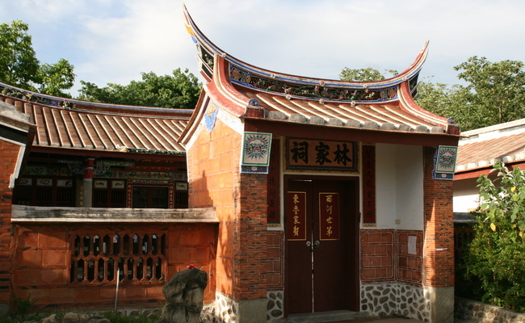
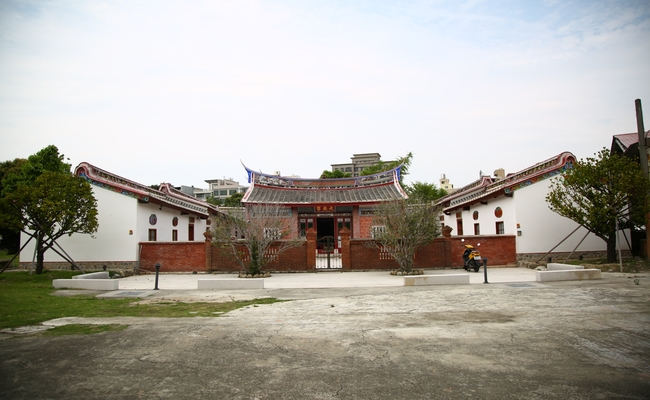
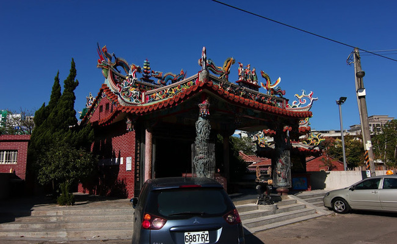
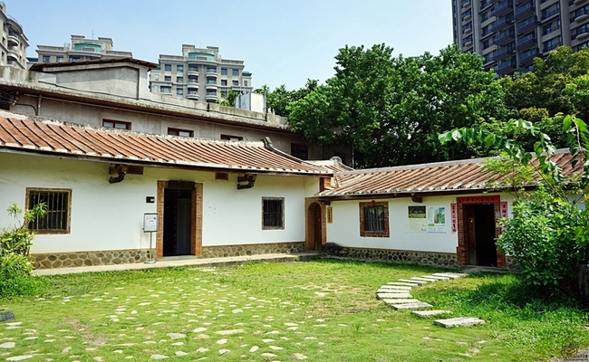
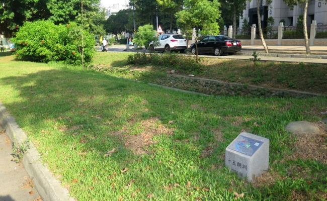
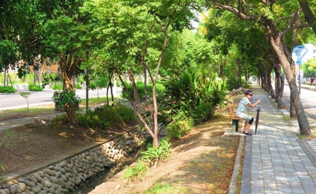
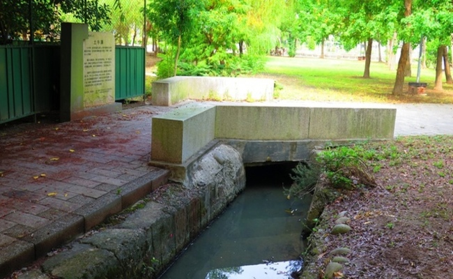

客庄文化休閒觀光導覽
報名由此去
一、六家水圳園區導覽
二、新埔小鎮文化導覽
三、關西小鎮文化導覽
四、大隘地區文化導覽
五、竹東客庄文化導覽
六家水圳園區導覽
六家林家祠

問禮堂
歷史沿革
林先坤憑其才幹與努力，團結宗族力量，經營六家的開發，很快地便從佃戶身份，躍昇為小租戶的地主地位。由於其熱心公益，社會地位日昇，在林爽文之亂時，林先坤號召鄉民組成義民軍保衛鄉土，並助清軍平亂，因而獲清廷頒賜「褒忠」匾額及軍功獎勵。林先坤的三子林國寶亦頗能承其父之風，在竹塹城改建之時，出錢出力幫了很多忙，並於嘉慶年間，捐官得監生，後更與其祖衡山公、其父先坤公同獲「奉直大夫」的誥封，為林家增添不少榮耀與名望。問禮堂建於道光十二年（1832），其興築緣於道光十一年（1831），林國寶之子林繩褒（秋華）中鄉試武舉人，故於次年擇地建問禮堂，豎立旗杆以光耀門楣，完成後與大夫第合稱南北雙廳，並作為林家的議事公廳。林秋華中武舉人之後對地方之開發功績卓著，道光十三年集資設隘開拓九芎林、三重埔等地，道光中期之後又往墾噶瑪蘭，多至數百甲，其後裔均在宜蘭發展，當地亦有民居堂號問禮堂者，均為林家之後代。
建築描述
問禮堂在格局上可說是三堂四橫的大宅院，但整體上是由一個四合院所構成，兩旁加建橫屋，合院後方再加一座五開間的房屋，稱為枕頭槓。合院中間有一個天井，為前堂與正堂的中介空間，左右的南北廂與橫屋間也有天井，以達到通風採光的功能。在構造上問禮堂可說反映出客家建築的特色，在牆身部分，底部下段以卵石勒牆腳，上以一層灰磚收邊，再承接土埆磚牆，外表塗上一層白色灰泥，具簡樸的性格。問禮堂於民國91年（2002）整修完成，恢復原有的規模。
修復過程
竹北問禮堂修護工程於民國88年（1999）12月完成發包，由慶霖營造有限公司得標，並於89年（2000）1月開工，期間經歷二次變更設計，並將新金順、義靈祠納入修護範圍，至91年（2002）完工。在本次修護工程中，拆除了部分增建的新建築，復原了問禮堂原有的規模，雖然部分建築體為新建，但是所用材料與工法皆為傳統方式。
大夫第

忠孝堂
歷史沿革
民俗公園忠孝堂位於東平里18號，具有百年歷史，原為老屋彭城公派下所有，後轉讓林先坤第六房派下，為前省主席林光華先生祖屋，日治時期因風水考量於原圍牆內加建一道圍牆，成兩道圍牆的形式，正廳保留原有格局，但左右橫屋均已改建。
建築描述
建築保留客家傳統合院風格，為聚落重要建物之一。建築格局屬於正身五開間，左右兩橫屋格局。屋前有兩道圍牆，有防禦上的特色，堂屋牆面為半堵斗子砌的形式，上段為白灰粉刷。整體形式較簡單、屋身的寬度較窄，屋高也較低。 在六張犁聚落的船穴風水來說，此屋為船倉之所在，也是好地理，所以子孫發達。在96年（2007）登錄為新竹縣歷史建築。
是否開放
否
義靈祠

新金順
歷史沿革
新金順為六張犁聚落最東邊之建築物，興建年代略晚於問禮堂，其為林家的商號，除販賣聚落日常生活用品之外，亦為中藥店及旅人跌打損傷之治療場所，這個商號提供整個聚落平日所需，由此亦可想見聚落極盛時期之規模。
建築描述
新金順附設水力驅動的碾米廠，現僅存部份水溝遺蹟。
修復過程
竹北問禮堂修護工程於民國88年（1999）12月完成發包，由慶霖營造有限公司得標，並於89年（2000）1月開工，期間經歷二次變更設計，並將新金順、義靈祠納入修護範圍，至91年（2002）完工。
永昌宮

新瓦屋忠孝堂
歷史沿革
清乾隆年間，廣東省潮州府饒平縣的林孫檀氏家族，渡海來臺，於竹北開墾農田，建立客家聚落，到了嘉慶年間，林孫檀氏的三子象賢和四子象明在竹北芒頭埔興建「忠孝堂」公廳
建築描述
忠孝堂，為一廳堂、一門樓、兩護屋的紅瓦片屋頂、泥磚牆的建築。雖經數次的整修，但因年代久遠，過份老舊，1973年另建混泥土建築，1974年落成，即現在的忠孝堂。舊公廳便不再使用而遂漸凋零毀損。
其他資訊
珍貴文化的新瓦屋客家文化保存園區，規劃成為開放休憩活動場所，提供民眾體驗客庄生活、參觀歷史遺跡、客家農村生活、文化活動、主題展覽等等，提供給民眾體驗客庄生活與接觸客家文化，以及感受客庄歷史意義與文化價值。
新瓦屋聚落內建築

新瓦屋藝術駐村
歷史沿革
文化局文化資產科進駐新瓦屋後，參考當時臺北「藝饗空間」，以及臺中鐵道藝術倉庫的空間申請使用規則，開始研擬「新瓦屋客家文化保存區駐村工作者計畫」。2012 年 3 月，文化局核定計畫內容並公告開放由從事手工藝、藝術創作、建築景觀、應用設計、影像紀錄、音樂舞蹈演藝、跨領域創作之個人、公司、工作室、協會、基金會、學術教育團體申請進駐參與徵選。
建築描述
對原有傳統建築，強調其真實性與完整性，盡可能保留原始設施，從公廳泥磚遺跡到石棉瓦屋頂的鐵皮倉庫。但與此同時，新建鋼骨結構玻璃帷幕的集會堂，其高度、量體與造型，成為新瓦屋地景營造的指標性建物。新瓦屋保留的泥磚造、灰泥粉刷、加強磚造、鋼筋混凝土、鋼骨玻璃帷幕等多樣建築形態，堪稱一次瞭解臺灣建築發展的縮影
其他資訊
珍貴文化的新瓦屋客家文化保存園區，規劃成為開放休憩活動場所，提供民眾體驗客庄生活、參觀歷史遺跡、客家農村生活、文化活動、主題展覽等等，提供給民眾體驗客庄生活與接觸客家文化，以及感受客庄歷史意義與文化價值。
十五朗圳

低圳
歷史沿革
兩百年前，林姓先祖自中國廣東饒平引進水圳灌溉的技術，引頭前溪的河水，並利用溪內的鴨卵石，聯合當地居民建造水圳，使原本荒蕪的六家地區，搖身一變成為綠油油的稻田，物產豐饒讓當地居民把這裡稱為「六家庄」。六家庄的圳道以東興圳為骨架，流經水汴頭之後，分流為高圳、低圳、十五郎圳及麻園圳，這些水圳灌溉六家庄的稻田長達兩百年之久，因此六家人對農田的情感，應當與水有密切的關係。
建築描述
從古老的聚落番子寮旁邊的「大汴」，一共分為四條小水圳，高圳、低圳、麻園圳與十五朗圳，分別灌溉六家莊的上百甲良田。每一條水圳都因為流經不同的土地紋理，而有個別的特色。
其他資訊
低圳自番仔寮水汴頭沿六家一路筆直向西流至嘉豐二街，高圳與十五朗圳在此與低圳匯合。
高圳

水車
歷史沿革
兩百年前，林姓先祖自中國廣東饒平引進水圳灌溉的技術，引頭前溪的河水，並利用溪內的鴨卵石，聯合當地居民建造水圳，使原本荒蕪的六家地區，搖身一變成為綠油油的稻田，物產豐饒讓當地居民把這裡稱為「六家庄」。水車是早期農村重要的水利設施，可以把較低水圳的水引到高處以便灌溉農田。
建築描述
新竹縣政府在水圳旁設置水車，使民眾了解百年前水圳的灌溉用途及六家農耕業發達的情景。
其他資訊
待補充
卵石駁坎

十三伯公
歷史沿革
竹北市農民羅阿東與妻子在晚上散步時無意在一間鐵皮屋發現未得到安置的神像，遂決心要為祂們找容身之處。原先不懂電腦及公文流程的他年爭取經費、接受信眾捐助，並行文新竹縣府、客委會、高鐵局，獲當時客委會主委羅文嘉重視。研究客家、文史的學者也來研究土地公來歷，由內政部找出文獻才確認分別是隘口、十興、東平、中興等伯公身分。
建築描述
廟門上的神官是由蔡森瑤師傅繪製，栩栩如生。宮廟外頭則保留了當初各尊土地公的原廟，小小間一字排開，似乎帶有日本宮崎駿動畫《神隱少女》裡的神祕感，外牆也清楚說明十三尊神像原本供奉的地點
其他資訊
待補充
土牛溝

水汴頭
歷史沿革
水汴頭是圳道設水門分水入支渠的地方，東興圳流到公三公園後，在此成為水汴頭。水汴頭一帶水面加寬，經此設施再分流為高圳、低圳、十五朗圳等三條水圳。
建築描述
待補充
其他資訊
待補充